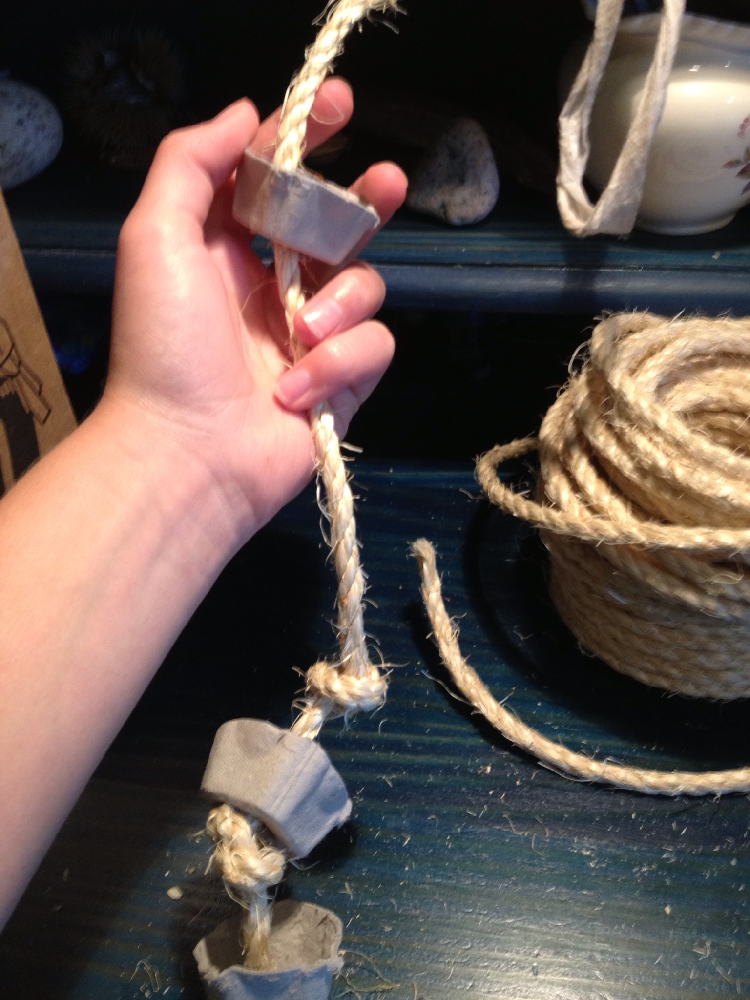
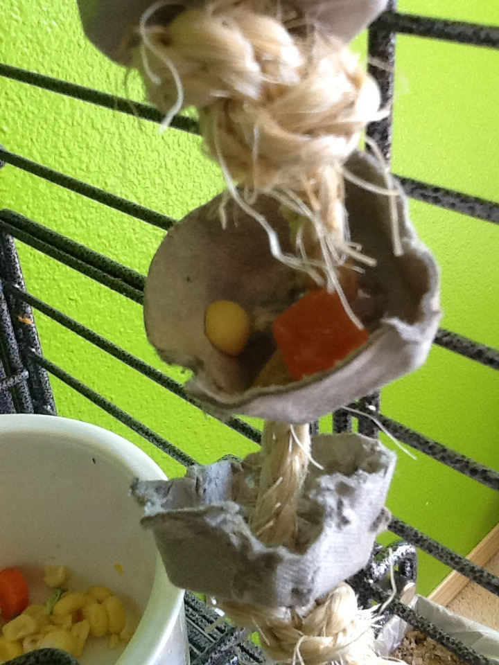

Hanging Buffet
MATERIALS: 1 egg carton, rope, scissors
1. Cut the bottom cup pieces of the egg carton out so that you have
some little cups. Using scissors, cut holes in the bottom of the
cups. This toy can also be made with paper cups or any other sort
of cup. Just make sure whatever you use is bird-safe.

2. Cut a piece of rope about 1 foot long. You can make this
rope longer or shorter to make the toy bigger or smaller. A
foot of rope makes the toy about 6" long.

3. Tie a knot in the bottom of the piece of rope. Then string
one of the cups onto the rope. Tie another knot about an inch
above the cup and string another cup onto the rope. Continue
doing this until most the rope has cups strung onto it.

4. Tie the top part of the rope to the cage bars to hang the toy.
Then put small treats such as nuts and pieces of fruit in the cups
for your bird to discover.
